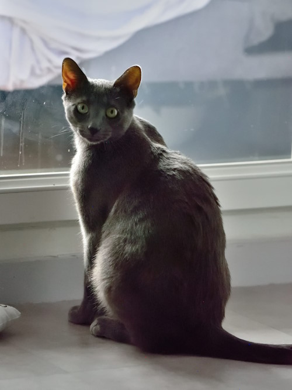
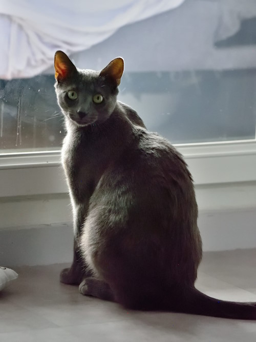
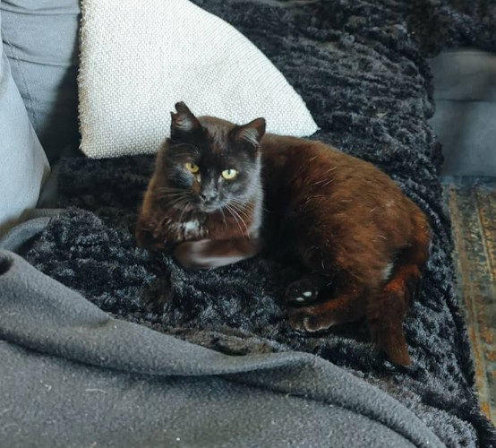

Piou-Piou ♂ - 10 mois
& Bonny ♀ - 10 mois

⌠Fermer cette fiche âŒ


🈠Piou-Piou et Bonny à l'adoption.
Nos deux inséparables ! Ce joli duo de frère et sœur est désormais à la recherche de sa famille pour la vie, à adopter ensemble.
Piou-Piou, petit mâle de 10 mois, noir et blanc à poils longs est une crème de grand chaton. Un peu timide au départ, il se dévoilera relativement vite aux côtés de sa nouvelle famille. Piou-Piou adore les câlins et aime aussi beaucoup les parties de jeux.
Bonny, jolie femelle de 20 mois également, tigrée et blanche, est une minette toute douce et agréable à vivre. Un peu plus sur la réserve que son frère, elle apprécie elle aussi les papouilles et aime beaucoup jouer avec sa famille d'accueil, petites souris, bouts de ficelle, billes, tout y passe !
Bonny a la particularité de n'avoir plus qu'un seul œil. Nous l'avons en effet récupérée avec un oeil trop abîmé pour être sauvé, elle a donc subi une énucléation et s'est très bien remise de sa chirurgie !
😻😻 Piou-Piou & Bonny s'adorent et passent énormément de temps ensemble. Nous souhaitons donc une adoption en duo.
🌠À rencontrer à La Salle Les Alpes (05).
Frais d'adoption réduits : 100€ chacun. Possibilité d'échelonner le règlement.
Piou-Piou et Bonny partiront :
- ☑️ Stérilisés
- ☑️ Identifiés par puce électronique
- ☑️ Primo-vaccinés
- ☑️ Testés fiv/felv
- ☑️ Déparasités
- ☑️ Certificat de bonne santé vétérinaire délivré
Le certificat d'engagement et de connaissances, délivré par nos soins, doit être lu et signé.
Pour nous contacter, utilisez les informations disponibles en pied de page après avoir fermé cette fenêtre. Merci de nous envoyer un message en nous détaillant votre mode de vie et les conditions dans lesquelles le chat sera accueilli chez vous. Nous fixerons ensuite un rdv téléphonique afin d'échanger de vive voix.
Orkan ♂
10 mois

⌠Fermer cette fiche âŒ
 

🈠Orkan à l'adoption.
Orkan est un jeune mâle de 10 mois, tout en muscles et athlétique !
Orkan a été adopté chaton l'été dernier, mais sa famille nous a demandé de le récupérer au cours de l'automne. Nous avons donc eu la chance de pouvoir rapidement replacer Orkan chez une chouette famille d'accueil, auprès de laquelle ce gentil chat s'est montré plein d'amour et de tendresse.
Orkan demande néanmoins de plus en plus à avoir accès à l'extérieur, mais sa FA vivant en appartement, cela lui est malheureusement impossible. Sa famille d'accueil est très triste de devoir se séparer de lui car il était question de l'adopter, mais pour le bien d'Orkan, elle préfère lui trouver une nouvelle maison où il pourra se dépenser et être tout à fait bien dans ses pattounes.
🡠Nous cherchons pour Orkan une nouvelle famille en maison ou avec possibilité de se dégourdir les pattes en extérieur, après bien sûr un temps d'adaptation dans les nouveaux lieux uniquement en intérieur.
Orkan est un jeune chat plein de vie et enthousiaste, très sociable et doux, même avec les enfants (Orkan partage le quotidien d'une petite fille dans sa FA), il adore jouer et un rien devient le meilleur jouet !
Orkan est également gourmand !
Sa FA pense qu'il se sent aussi un peu seul et serait ravi d'avoir des copains à quatre pattes, avec lequel faire de grandes parties de jeu.
Orkan doit se nourrir uniquement de croquettes et de pâtées médicalisées pour les problèmes urinaires. En effet, il a souffert par le passé de cystite et va bien depuis que nous avons modifié son alimentation. Nous pouvons vous donner des références.
🌠À rencontrer à Briançon (05).
♥️ Adoption en don libre !
Orkan est :
- ☑️ Identifié par puce électronique
- ☑️ Castré
- ☑️ Vacciné
- ☑️ Déparasité
Le certificat d'engagement et de connaissances, délivré par nos soins, doit être lu et signé.
Pour nous contacter, utilisez les informations disponibles en pied de page après avoir fermé cette fenêtre. Merci de nous envoyer un message en nous détaillant votre mode de vie et les conditions dans lesquelles le chat sera accueilli chez vous. Nous fixerons ensuite un rdv téléphonique afin d'échanger de vive voix.
Lulu ♂
2 ans
⌠Fermer cette fiche âŒ
🈠Lulu à l'adoption.
Lulu est un petit chat mâle de 2 ans trouvé errant dans les rues. Déjà sociabilisé, Lulu connait les humains.
Lulu est un chouette chat très calme et très affectueux, il adore les câlins et n'est pas farouche du tout. Sa famille d'accueil actuelle nous le décrit comme un chat en or, et une très bonne pâte.
Lulu cohabite avec un chien et tout se passe très bien !
Ce gentil chat noir aux reflets roux est malheureusement positif au FIV.
👩‍⚕️ Pour rappel, les chats FIV + ne sont pas forcément impactés par le virus au cours de leur vie et peuvent vivre aussi longtemps qu'un autre chat, il faudra cependant porter une attention particulière à sa santé.
En ce qui concerne la présence d'autres chats au sein du foyer, cela ne nous semble pas impossible,c'est à discuter ensemble.
Lulu semble ok pour une vie en appartement.
🌠À rencontrer sur Gap (05).
Adoption à 180€.
Lulu est :
- ☑️ Identifié par puce électronique
- ☑️ Castré
- ☑️ Testé fiv+
- ☑️ Déparasité
- ☑️ Binetôt primo-vacciné
Le certificat d'engagement et de connaissances, délivré par nos soins, doit être lu et signé.
Pour nous contacter, utilisez les informations disponibles en pied de page après avoir fermé cette fenêtre. Merci de nous envoyer un message en nous détaillant votre mode de vie et les conditions dans lesquelles le chat sera accueilli chez vous. Nous fixerons ensuite un rdv téléphonique afin d'échanger de vive voix.